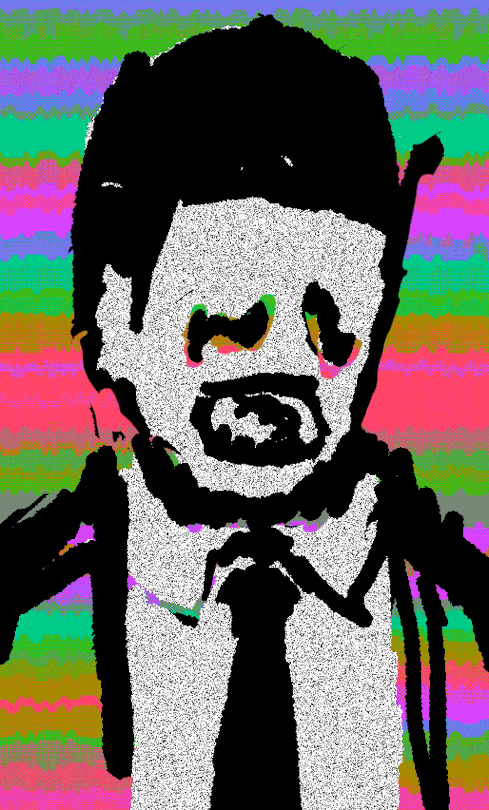
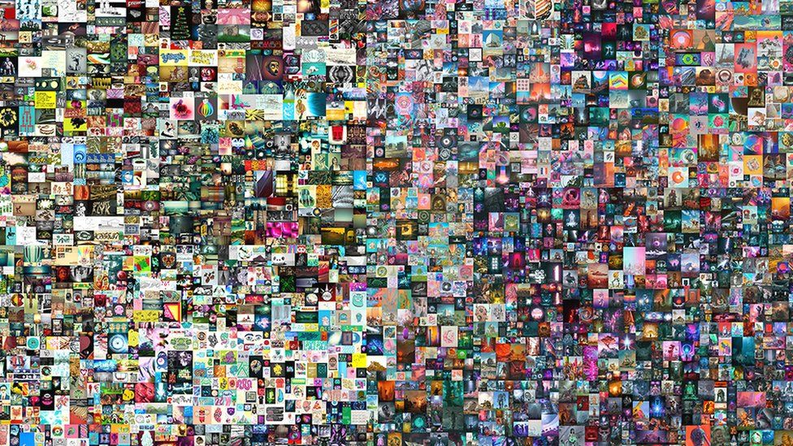
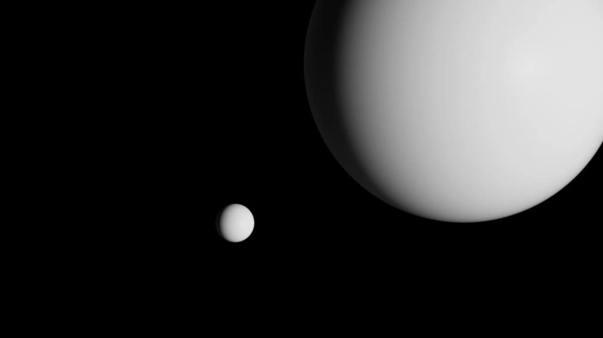

Tokens movimentaram R$ 1,4 bilhão
- CryptoPunk #5217 — US$ 5,59 milhões
- Ocean Front (Beeple) - US$ 6 milhões
- A Coin for the Ferryman (XCopy) - US$ 6,03 milhões 
- Crossroad (Beeple) - US$ 6,6 milhões
- CryptoPunk #7804 - US$ 7,6 milhões
- CryptoPunk #3100 - US$ 7,67 milhões
- CryptoPunk #7523 - US$ 11,75 milhões
- Human One (Beeple) - US$ 28,98 milhões
- Everydays: The First 5000 Days (Beeple) - US$ 69,3 milhões 
- The Merge (Pak) - US$ 91,8 milhões 
O CryptoPunk de um macaco de gorro laranja e corrente de ouro é um dos mais desejados da coleção de desenhos de 24 por 24 pixels, em aparência estilo 8-bit, que foram geradas por um algoritmo.
De acordo com dados do site Rarity.tools, o punk #5217 é o 34º mais raro de toda a coleção, que conta com 10 mil NFTs. Não por acaso, foi vendido por 2.250 ETH em julho - o valor, se corrigido para a cotação atual da criptomoeda, supera os US$ 9 milhões.
Beeple, pseudônimo do norte-americano Michael Joseph Winkelmann, é um dos artistas mais famosos do universo cripto e dos NFTs - não por acaso, várias de suas obras estão entre os NFTs mais caros de 2021.
Ocean Front é um dos seus desenhos mais conhecidos, criado em 2019 e revendido em março, quando acabou nas mãos de Justin Sun, criador da criptomoeda Tron.
Uma dos primeiros trabalhos de XCopy - outro nome conhecido no universo da arte digital - a obra foi criada em 2018, e vendida por mais de 34 milhões de reais em novembro de 2021.
A obra detém o recorde de NFT mais caro da história da SuperRare, uma das plataformas de tokens não fungíveis mais conhecidas do mundo.
A segunda obra de Beeple na lista é um vídeo curto, de cerca de 10 segundos, que mostra pedestres passando em frente a um corpo enorme caído no chão, com frases ofensivas e outros insultos escritos em si.
Comprado em outubro de 2020 por US$ 66.666, o NFT foi vendido por 100 vezes o valor depois de apenas quatro meses, em fevereiro de 2021.
O punk #7804, de um alien de boina, óculos e fumando cachimbo, é apontado pela Rarity.tools como o segundo mais raro de toda a coleção.
Ele foi comprado em março por 4.200 ETH, valor que hoje seria correspondente a mais de US$ 17 milhões. Na época, toda essa quantidade de ether era equivalente a "apenas" US$ 7,6 milhões.
Terceiro punk da lista, o #3100 é o sétimo mais raro da coleção de pequenos desenhos gerados automaticamente. Ele também é um alien, uma das características mais raras e desejadas de todos os CryptoPunks.
Ele também foi vendido por 4.200 ETH, também em março de 2021, mas com alguns dias de diferença para o punk #7804, o que fez com a cotação do ether no momento fosse ligeiramente maior, elevando o seu preço.
O CryptoPunk mais caro de todos os tempos, vendido por um valor cerca de 50% maior do que o segundo colocado, é o terceiro mais raro da coleção.
Também é um alien, mas com máscara de proteção. Ele foi vendido em um leilão da Sotheby's, em junho, e parte do valor se explica também porque o ether estava cotado por um valor maior do que os seus "concorrentes".
Outra obra de Beeple na lista, Human One se diferencia das demais por ser uma espécie de escultura, que mistura obra física e digital - e que pode (e deve) ser alterada por seu criador no futuro, como ele mesmo afirmou.
A venda de Human One também reforça a capacidade de Beeple em diferentes frentes, não apenas com um único tipo de arte. A obra foi vendida em novembro, chegando muito perto da faixa de US$ 30 milhões.
Outro NFT de Beeple, é o token não fungível único mais caro de todos os tempos - a explicação parece confusa, mas você vai conseguir entender ao chegar no último ítem da lista.
A obra reúne 5.000 desenhos do artista. Em 2007, ele começou a criar uma obra de arte por dia e, ao final de 5.000 dias, reuniu todas em um único NFT, que foi vendido em leilão da Christie's e chocou o mundo ao ser arrematado por quase US$ 70 milhões, em março.
O NFT mais caro da história é, na verdade, uma série de NFTs. O também renomado artista digital Pak, cujas obras já movimentaram mais de US$ 350 milhões, criou The Merge como um token de múltiplos donos.
Exatas 28.983 pessoas compraram suas mais de 312 mil cotas, somando mais de US$ 90 milhões. Juntas, elas formam o que o artista chama de "massa" e que fez de Pak o artista vivo com obra mais valiosa da história, superando o quadro Rabbit, criado por Jeff Koon em 1986 e que foi vendido por US$ 91 milhões.